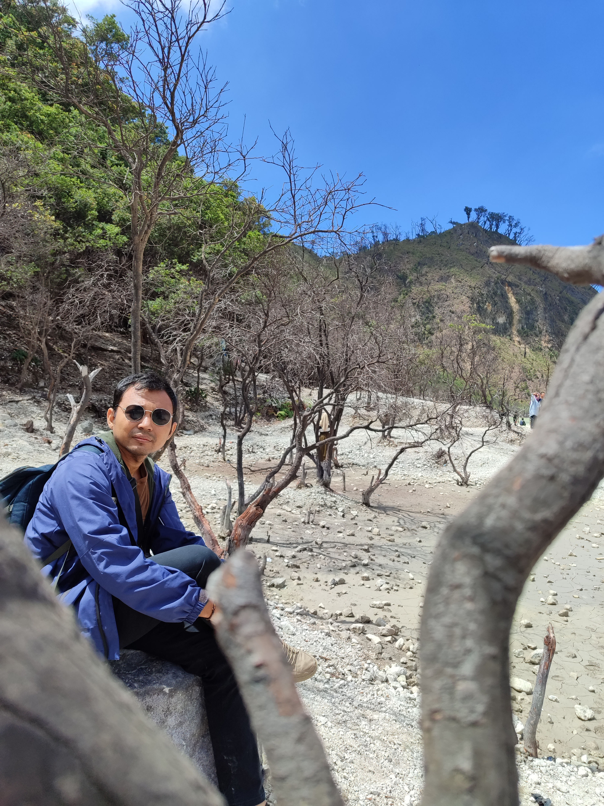

Halo! Selamat datang.
Saya Rizal Mariansyah
Saya adalah mahasiswa Teknik Informatika yang tertarik pada pengembangan tampilan website (front-end development). Silakan lihat portofolio saya. Jika tertarik bekerja sama, jangan ragu untuk menghubungi saya.

Rizal Mariansyah
Mahasiswa Teknik Informatika
📍 Bangil, Pasuruan, Jawa Timur
Tentang Saya
Halo, saya Rizal Mariansyah.
Saya adalah mahasiswa Teknik Informatika yang tertarik pada dunia pemrograman dan pengembangan website.
Saat ini, saya sedang belajar HTML, CSS, dan JavaScript untuk mengembangkan kemampuan saya sebagai Front-End Developer. Saya senang mempelajari hal baru dan mencoba membuat proyek website sebagai sarana latihan.